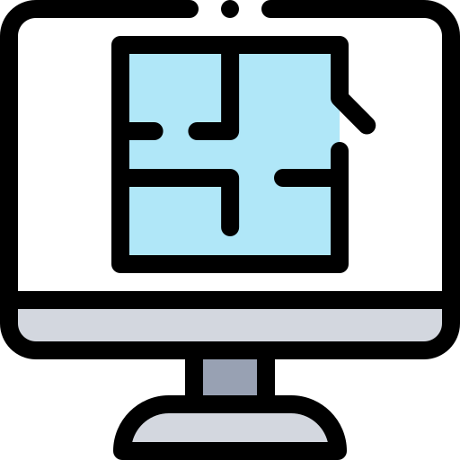

COMPÉTENCES ET QUALITÉS
Mes compétences :
Développement web : CSS, PHP, HTML

- CSS signifie Cascading Style Sheets. Il s'agit d'un langage qui décrit l'apparence et la présentation des pages HTML. Avec ce langage, je peux modifier l'apparence d'un site web et l'améliorer visuellement et graphiquement.
- PHP signifie Hypertext Preprocessor. Il s'agit d'un langage qui permet de créer des scripts web côté serveur pour produire des pages web dynamiques. Ce langage me permet de récupérer des informations depuis le site et de créer des pages qui réagissent aux changements liés, par exemple, aux inscriptions.
- HTML signifie Hyper Text Markup Language. Il s'agit d'un langage qui permet de structurer les pages web et d'y inclure leur contenu. Ce langage me permet de créer des sites web et de les structurer comme je le souhaite.
Le développement web me permet de créer des sites web, de les organiser comme je le souhaite, et de récupérer leurs informations.
Bases de données : conception et SQL

- La conception de bases de données consiste à organiser les données en modèle Entity/Relationship et associations. Cette compétence me permet de modéliser des bases de données et de les représenter sous plusieurs formes pour les rendre compréhensibles par tous.
- SQL (Structured Query Language) se traduit par "Langage de requête structuré". Il s'agit d'un langage utilisé pour manipuler et exploiter les bases de données relationnelles. Ce langage me permet de créer des bases de données et de les manipuler pour obtenir les résultats que je souhaite.
Algorithmes : langages C et Python
- C est un langage de programmation qui offre un contrôle significatif de la mémoire. C'est le langage de base pour de nombreux logiciels et langages modernes. C me permet de créer des algorithmes et des systèmes algorithmiques.
- Python est un langage de programmation interprété de bas niveau. Python, comme C, me permet de créer des programmes et des systèmes.
Architecture informatique

- Gestion de distribution Linux et gestion Linux
Réseau

- Gestion de réseau et connexion entre plusieurs réseaux